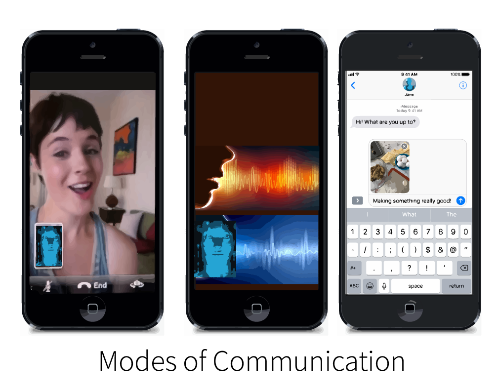
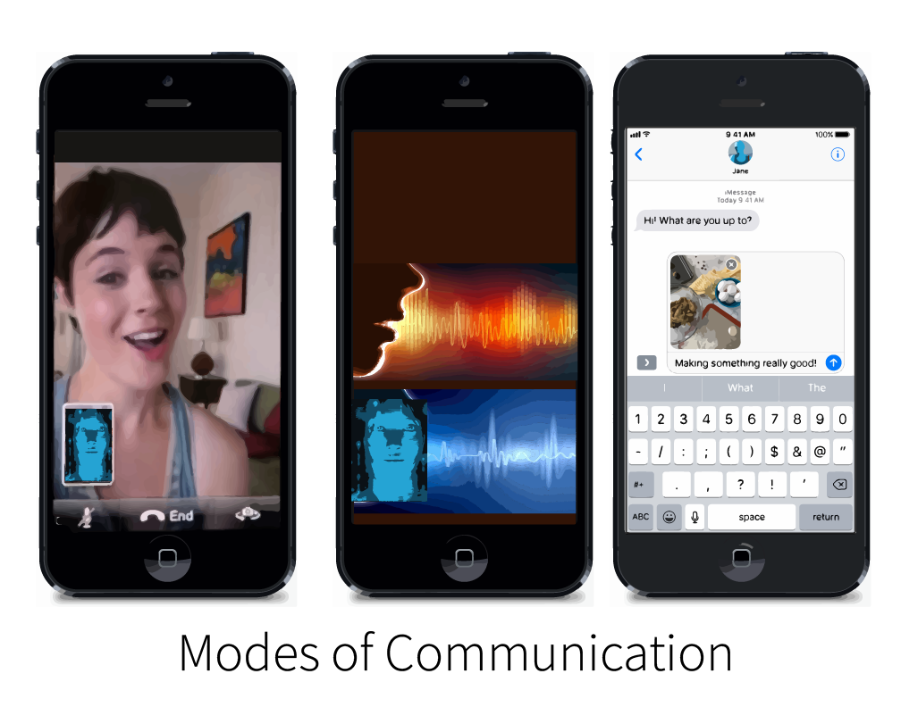

Interactive Research
What it Would Really Be Like to Date Yourself
To continue to explore the social implications of creating Artificial Intimacy, I wanted to deepen my understanding of the ways in which data may be used and manipulated to achieve personalized intimacy in the future.Through looking into open frameworks plug in data libraries, I became aware of how many free, opensource, fully developed plug ins there are for various aspects of machine learning, data collecting and sorting, and user interaction/interpretation. I began by looking into the open-source programs and algorithms that are available and public for dissecting personal data, manipulating personal data, and reacting in real time to human behavior to update data. In short, I wanted to see how possible and available it was to replicate the "DNA" or architecture of a person based on their own data footprint.
Realizing the availability of these technologies, I reflected on a comment a friend had made to me regarding frustrating with online dating apps: "I wish I could just date myself". Would you? This brought me to back to one of my earlier questions: how will people actually handle personalized highly-developed intimate experiences based on their own data usage? In short how will people interact and react to their own digital cloned persona ?
My proposed interaction project would create generative DNA sets based on the users data footprint. This program would gather data from social and private media usage, use genetic algorithms to organize and breed this data into a single DNA sequence, and use the Vokaturi emotion speech recognition library to update the DNA based on the users interaction and emotional response in conversation. The idea of the app is to give the user the experience of dating a cloned version of themselves. The aim is to confront the user with self reflection from another point of view and question the legitimacy and premise on which future artificial intimacy will be created. Would this be a satisfying appeal to narcissism or a terrifying realization?
Questions I Aim to Pose With This Interaction:
How will personal data be used to discern our wants, desires, insecurities, and motivations to generate and personalize our experience of intimacy.
If intimacy of the future is catered to creating personalized and optimized experiences to what degree will this be a reflection of our own desires and narcissism ? What will it be like to interact with a data -driven entity modeled off yourself?
How will this cause us to change our own opinions and views of ourselves?
Would having someone who knows your whole history, your likes , dislikes and has opinions and preferences based on your own be a dream come true or a self-reflection you are unprepared for and unwilling to have?
To what degree would people see this clone as a reflection of themselves?
 

Application & Interaction:
Date Yourself: An interactive app that lets you see what it would really be like to date yourself
1. Collecting Personal Data
The app would first ask you permission to link to your personal data usage: Instagram, Facebook, Tinder, PronHub etc. To amalgamate information of who you are through gaining insight into your likes, dislikes, behaviors, online persona and presence.
**its important to note that these algorithms are not only already created and used to study our habits , but are also largely opensource and can be implemented by most anyone
2. DNA Creation
This program would then take this data from social and private media as input in Genetic algorithms, used to determine optimum combinations in large pools of data
**This will generate a "DNA" data set, which acts as a collective clone of the user's personality, preferences, opinions, and mannerisms.
3. Facial Scanning
Then the app will use facial scanning to take a preliminary mesh or your face to generate a avatar that is a "replica" of yourself
**This will continue to update in order to mimic your facial expressions and mannerisms as you continue to interact with it
5. Usage, Communication & Growth
- The application will engage the user in facetime calls, messages conversation, and voice conversations as well as continue to monitor the users usage across social and private media.
Every interaction the "clone" will engage the user in questions about their day, life, opinions, and things they are doing in organic conversation that helps the clone become more accurately like the user and also establish a closer relationship with them.
6. Goal
The physical goal of the app would be for the clone to behave, sound, and appear as uncannily as the user as possible
** The larger goal would be to give the user the experience of what their online cloned personality looks like and interact with it. Additionally this would play out a scenario of future intimacy in which intimacy is crafted around optimizing a users experience, and allow the user to form opinions about this.